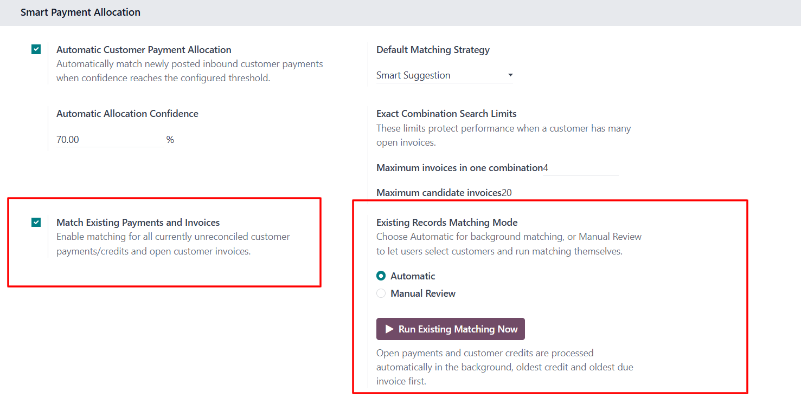

Automatically reconciles open customer invoices — including old, backlog, and manually created journal entries — using reference, exact amount, or invoice-combination matching. During payment entry, instantly see exactly how much the customer owes and their current balance due, no manual lookup needed.
Developed by Omar Ahmed
Smart Automated Reconcile Payment helps accounting teams reconcile customer payments with open invoices quickly, accurately, and efficiently.
The module supports both automatic and manual payment allocation. It can identify the most suitable invoices based on payment reference, exact amount, outstanding balance, or a combination of multiple invoices. Accountants can also review the suggested allocation and manually select the invoices they want to reconcile.
During payment entry, the module displays the customer's current outstanding balance, giving users a clear view of receivables before confirming the payment.
By reducing manual reconciliation work and improving payment visibility, Smart Automated Reconcile Payment helps businesses save time, minimize accounting errors, and maintain accurate customer balances.
Enable Match Existing Payments and Invoices to also process customer payments, credits, and open invoices that already existed before this module was installed. When enabled, choose how those historical records are matched:

This second option only appears once Match Existing Payments and Invoices is switched on — it stays hidden the rest of the time to keep the settings screen simple.